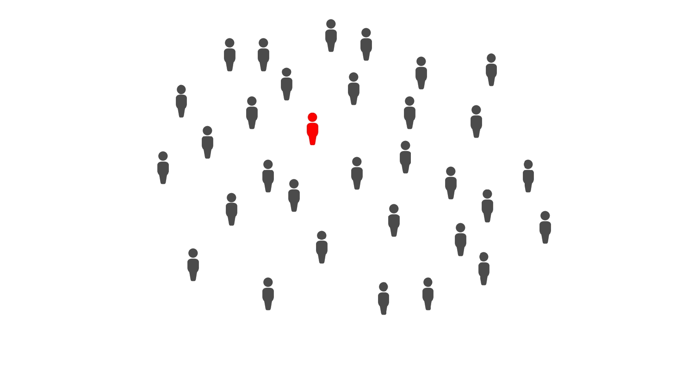

In the following examples, click the arrows or swipe through the images to see how a virus with an R0 ~2-3 infects a population
Consider the following population where each member is colored gray, representing an uninfected and non-vaccinated patient
-

Now imagine ~75% of the population were vaccinated (blue) against the red strain of the virus. See how the virus spreads now:

High vaccination rates provide a 'wall' of immunity to those who are not vaccinated, note how some unvaccinated members remain uninfected
Now let's create a population with a ~99% vaccination rate, all but one member is vaccinated against the red strain.
What happened? The only unvaccinated member contracted the original strain of the virus and then the virus mutated into a more contagious and immune-evasive version (now in green). The prior vaccination is not effective at preventing green-strain infection. As a result, all members are infected regardless of their vaccination status, similar to the first scenario.
This is a small scale example, however it highlights the importance of high vaccination rates. All it takes is one person to cause a virus to mutate into one that can avoid prior immunity.
We have seen this outcome throughout the COVID-19 pandemic. The Omicron variant was discovered after vaccines had become mainstream. If everyone in the world was vaccinated, COVID-19 would have had a much smaller chance to mutate into something like Omicron.
Vaccine distribution is not equal across the globe, however. Not only do wealthy nations need to distribute vaccines to lower-income regions but they also need to educate those populations on the importance of vaccinations.
If you live in the United States you are lucky enough to have free, uncontested access to most mainstream vaccines, including COVID-19 vaccines. Do your part and get vaccinated, as well as the updated Bivalent booster which targets Omicron variants of COVID-19.
Find a vaccination site at vaccines.gov